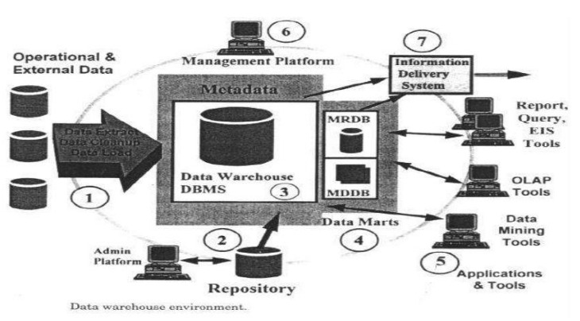

DATA WAREHOUSING, BUSINESS ANALYSIS AND ON-LINE ANALYTICAL PROCESSING (OLAP)
Basic Concepts - Data Warehousing Components – Building a Data Warehouse – Database
Architectures for Parallel Processing – Parallel DBMS Vendors - Multidimensional Data Model –
Data Warehouse Schemas for Decision Support, Concept Hierarchies -Characteristics of OLAP
Systems – Typical OLAP Operations, OLAP and OLTP.
Book Reference: Alex Berson and Stephen J.Smith, ―Data Warehousing, Data Mining & OLA,
Tata McGraw – Hill Edition, 35th Reprint 2016.
1.1 Basic Concepts
A Data warehouse (DWH) is a subject-oriented, integrated, time-variant and nonvolatile
collection of data in support of management’s decision making process. The above four
characteristics of data warehouse are described below
• Subject-Oriented: A Data warehouse is organized around major subjects such as
customer, supplier, product and sales. Data warehouse focuses on the modeling and
analysis of data for decision makers.
• Integrated: A Data warehouse constructed by integrating multiple heterogeneous sources
such as relational databases, flat files and on line transaction records.
• Time-variant: Data are stored to provide information from a historical perspective.
Example: the past 5 to 10 years.
• Non-volatile: A Data warehouse is always a physically separate store of data transformed
from the application data found in the operational environment. Therefore, it does not
require transaction processing, recovery and concurrency control mechanisms. DWH
requires only two operation:
- Initial loading of data.
- Access of data
The data warehouse architecture is based on a relational database management system server
that functions as the central repository for informational data.
Operational data and processing is completely separated from data warehouse processing. This
central information repository is surrounded by a number of key components designed to make the
entire environment functional, manageable and accessible by both the operational systems that
source data into the warehouse and by end-user query and analysis tools.
The source data for the warehouse is coming from the operational applications. As the data
enters the warehouse, it is cleaned up and transformed into integrated into DW. The transformation
process may involve conversion, summarization, filtering and condensation of data. In order to
store historical component, the data warehouse must be capable of holding and managing large
volumes of data, coming from different systems in different data formats over many years.
The 7 major components of data warehousing are described below.
Data warehousing Components
Data Warehouse is an environment, not a product. A Data warehouse is a subject-oriented,
integrated, time-variant, nonvolatile Collection of data that supports management decision making
process.
A RDBMS (Relational database management system) server serves as the central repository
of DWH data. The source of data is operational applications. As the data enter, it cleaned,
transformed, and integrated into DWH
Overall Architecture of a DWH

Data Warehouse Database
The central data warehouse database is the cornerstone of the data warehousing
environment. This database is usually implemented on relational database management system
(RDBMS) technology. However, they are optimized for transactional database processing. Data
warehouse attributes include very large database size, ad hoc query processing needs and the need
for flexible user view creation such as aggregation, multi-table joins and drill-downs.
These approaches include:
• Parallel relational database designs for scalability that include shared-memory, shared disk,
or shared-nothing models implemented on various multiprocessor configurations
(symmetric multiprocessors or SMP, massively parallel processors or MPP, and/or clusters
of uni or multiprocessors).
• An innovative approach to speed up a traditional RDBMS by using new index structures
to bypass relational table scans.
• Multidimensional databases (MDDBs) that are based on proprietary database technology;
conversely, a dimensional data model can be implemented using a familiar RDBMS.
Sourcing, Acquisition, Cleanup and Transformation Tools
A significant portion of the implementation effort is spent extracting data from operational
systems and putting it in a format suitable for informational applications that run off the data
warehouse.
The data sourcing, cleanup, transformation and migration tools perform conversions,
summarizations, key changes, structural changes and condensations needed to transform disparate
data into information that can be used by the decision support tool. The major functions of the
tools are:-
• Removing unwanted data from operational databases
• Converting to common data names and definitions
• Establishing defaults for missing data
• Accommodating source data definition changes
• Calculating summaries and derived data.
The data sourcing, cleanup, extract, transformation and migration tools have to deal with some
significant issues including:
• Database heterogeneity. Different DBMS follow different data models, data access
language, data navigation, operations, concurrency, integrity, recovery etc.
• Data heterogeneity. Data are defined and used in different models – homonyms,
synonyms, unit compatibility (U.S. vs metric), different attributes for the same entity, and
different ways of modeling the same fact.
Metadata
Metadata is data about data that describes the data warehouse. It is used for building,
maintaining, managing and using the data warehouse.
Metadata can be classified into:
• Technical Metadata, which contains information about warehouse data for use by
warehouse designers and administrators when carrying out warehouse development and
management tasks.
• Business Metadata, which contains information that gives users an easy-to-understand
perspective of the information stored in the data warehouse.
Access Tools
The principal purpose of data warehousing is to provide information to business users
for strategic decision-making. These users interact with the data warehouse using front-end tools.
Many of these tools require an information specialist, although many end users develop expertise
in the tools.
Tools fall into five main categories:
1. Query And Reporting Tools
2. Application Development Tools
3. Online Analytical Processing Tools
4. Data Mining Tools
5. Data Visualization Tools.
1. Query and Reporting tools
Query and Reporting tools comprise of two groups - reporting tools and managed query
tools.
• Reporting tools
- Reporting tools include production reporting tools and report writers.
- Production reporting tools let companies generate regular operational reports or support
high-volume batch jobs such as calculating and printing paychecks.
- Report writers, are inexpensive desktop tools designed for end-users.
• Managed query tools
- Managed query tools shield end users from the complexities of SQL and database
structures by inserting a meta layer between users and the database.
- These tools are designed for easy-to-use, point-and-click operations that either accept
SQL or generate SQL database queries.
2. Application Development Tools
• The analytical needs of the data warehouse user community exceed the built-in capabilities
of query and reporting tools.
• In these cases, organizations will often rely on the tried-and-true approach of in-house
application development using GUI (graphical user interface) development environments
such as PowerBuilder, Visual Basic, Forte etc.
• These application development platforms integrate well with popular OLAP tools and
access all major database systems including Oracle, Sybase, and Informix.
3. OLAP Tools
• OLAP tools are based on the concepts of dimensional data models and allow users to
analyze the data using elaborate, multidimensional views.
• Examples: The commercial application for marketing, sales etc – e.g. region wise, product
wise quarterly sales report.
4. Data Mining Tools
• Data mining is the process of discovering meaningful hidden relationships, patterns and
trends by digging into large amounts of data stored in the warehouse using artificial
intelligence, statistical and mathematical techniques.
• Data Mining is used to perform Association, Classification, Clustering etc.
• The opportunities presented by discovering hidden, previously unknown, and valuable
facts help is “strategic” decision making by top managers
5. Data Visualization Tools
• It is a method of presenting the output using tools in such way that the problem and solution
are clearly visible to the domain experts, or any observers.
• It represents 2D or 3D, color images, sound virtual reality.
Data Marts
• Data marts are presented as an alternative to a data warehouse that takes significantly less
time and money to build.
• A data store that is subsidiary to a data warehouse of integrated data.
• The data mart deals with a partition of data (often called a subject area) that is created for
the use of a dedicated group of users. A data mart can be a set of denormalized,
summarized, or aggregated data.
• The data mart is a physically separate store of data and is resident on separate database
server, often a local area network serving a dedicated user group.
There are two types of Data Marts. They are
1. Dependent data Mart - their data is sourced from same the data warehouse, have a high
value because no matter how they are deployed and how many different enabling
technologies are used, different users are all accessing the information views derived from
the single integrated version of the data.
2. Independent data mart – every group in the organization build their own data mart, create
an environment where multiple operational systems feed multiple non-integrated data
marts that are often overlapping in data content, job scheduling, connectivity and
management.
Data Warehouse Administration and Management
Data warehouses tend to be as much as 4 times as large as related operational databases,
reaching terabytes in size. They are not synchronized in real time to the associated operational data
but are updated as often as once a day if the application requires it.
The data warehouse products include gateways to transparently access multiple enterprise
data sources without having to rewrite applications to interpret and utilize the data.
In a heterogeneous data warehouse environment, the various databases reside on disparate
systems, thus requiring inter-networking tools.
Managing data warehouses includes:-
• Security and priority management
• Monitoring updates from the multiple sources
• Data quality checks
• Managing and updating meta data; auditing
• Reporting data warehouse usage and status
• Purging data
• Replicating
• Sub setting and distributing data
• Backup and recovery and
• Data warehouse storage management.
Information Delivery System
The information delivery component is used to enable the process of subscribing for data
warehouse information and having it delivered to one or more destinations according to some userspecified scheduling algorithm.
Delivery of information may be based on time of day or on the completion of an external
event.
Once the data warehouse is installed, the users don’t have to be aware of its location and
maintenance. All they need is the report or an analytical view of data at a specific point in time.
Note: With internet or intranet the delivery system enables information to end users via web.
Building a Data warehouse
There are two reasons why organizations consider data warehousing a critical need. In other
words, there are two factors that drive you to build and use data warehouse.
They are:
• Business factors: Business users want to make decision quickly and correctly using all
available data.
• Technological factors:
- To address the incompatibility of operational data stores
- IT infrastructure is changing rapidly. Its capacity is increasing and cost is decreasing
so that building a data warehouse is easy.
There are several things to be considered while building a successful data warehouse
- Business Consideration
- Design Consideration
- Performance Consideration
- Technical Consideration
- Implementation Consideration
Business Considerations:
Organizations interested in development of a data warehouse can choose one of the
following two approaches:
1. Top - Down Approach
2. Bottom - Up Approach
Top-Down Approach:
The organization develops an enterprise data warehouse (Central data repository) with
subset data marts. The Enterprise Data Warehouse (EDW) contains data in more detailed level.
Advantages:
1. Flexibility to be used by multiple departments.
2. Flexibility to cater for future requirements.
Disadvantages of storing data at the detail level are
1. The complexity of design increases with increasing level of detail.
2. It takes large amount of space to store data at detail level, hence increased cost
We should implement the top-down approach when
1. The business has complete clarity on all or multiple subject areas data warehouse
requirements.
2. The business is ready to invest considerable time and money
Bottom up Approach:
First develop individual data marts, which are then integrated into the enterprise data
warehouse.
The bottom up approach helps us incrementally build the warehouse by developing and
integrating data marts as and when the requirements are clear. We don’t have to wait for knowing
the overall requirements of the warehouse.
We should implement the bottom up approach when
1. We have initial cost and time constraints.
2. The complete warehouse requirements are not clear.
Design considerations:
To be a successful data warehouse designer must adopt a holistic approach that is
considering all data warehouse components as parts of a single complex system, and take into
account all possible data sources and all known usage requirements.
Most successful data warehouses that meet these requirements have these common
characteristics:
• They are based on a dimensional model
• Contain historical and current data
• Include both detailed and summarized data
• Consolidate disparate data from multiple sources while retaining consistency
Data warehouse is difficult to build due to the following reason:
• Heterogeneity of data sources
• Use of historical data
• Growing nature of data base
Data warehouse design approach must be business driven, continuous and iterative
engineering approach. In addition to the general considerations, the following specific points are
relevant to the data warehouse design:
Data Content
The content and structure of the data warehouse are reflected in its data model. The data
model is the template that describes how information will be organized within the integrated
warehouse framework. The data warehouse data must be as detailed as necessary. It must be
formatted, cleaned and transformed to fit the warehouse data model.
Metadata
It defines the location and contents of data in the warehouse. Meta data is searchable by
users to find definitions or subject areas. In other words, it must provide decision support oriented
pointers to warehouse data and thus provides a logical link between warehouse data and decision
support applications.
Data Distribution
One of the biggest challenges when designing a data warehouse is the data placement and
distribution strategy. Data volumes continue to grow in nature. Therefore, it becomes necessary to
know how the data should be divided across multiple servers and which users should get access to
which types of data. The data can be distributed based on the subject area, location
(geographical region), or time (current, month, year).
Tools
A number of tools are available that are specifically designed to help in the implementation
of the data warehouse. All selected tools must be compatible with the given data warehouse
environment and with each other.
All tools must be able to use a common Meta data repository.
Nine decisions in the design of a data warehouse
The following nine-step method is followed in the design of a data warehouse:
1. Choosing the subject matter of a particular data mart
2. Deciding exactly what a fact table record represents
3. Identifying and conforming the dimensions
4. Choosing the facts
5. Storing pre calculations in the fact table
6. Rounding out the dimension table
7. Choosing the duration of the db
8. The need to track slowly changing dimensions
9. Deciding the query priorities and query models
When the first three steps are correctly implemented the designers can attack the last 6
steps easily